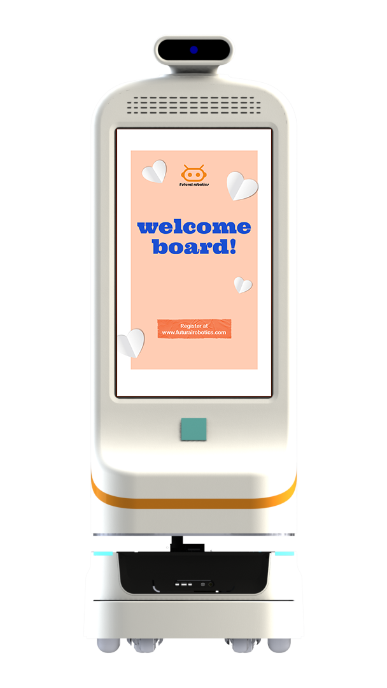

双擎科技“小擎 FW-22M”智能人形服务机器人适合哪些场景？

迎宾导医不止"小晴"一种形态。双擎迎宾/导医机器人系列中，小擎 FW-22M 定位智能人形服务机器人，小青 FW-22M 为具身智能机器人，面向更强调"人形交互"的服务场所。
22 寸屏人机交互
小擎 FW-22M 与小青 FW-22M 均为 22" 屏智能交互机型，支持迎宾、讲解、咨询等人机交互，依托双擎 EI-Core 智能框架与多模态感知，实现"看得到、听得懂、答得准"。
适合哪些场景
除医院导诊外，这类人形服务机器人也适用于企业展厅、政务大厅、商业综合体的迎宾讲解与业务咨询。双擎支持从外观设计、硬件开发到算法部署的全流程模块化定制，可按场所调整交互内容与外观。
全栈支撑
小擎/小青 背靠双擎具身智能全栈能力：AMR、多模态感知与融合、VLA 大模型与自研 EI-Core，由博士领衔团队研发，并具备 ISO9001、CE 等资质。
模块化定制
小擎 FW-22M 与小青 FW-22M 背靠双擎全流程模块化定制能力：从外观设计、硬件开发到算法部署端到端交付。面向不同场所，可调整交互内容、外观与挂载，让"人形服务"从标准品走向场景化，而不是简单换壳了事。
资质与服务保障
小擎/小青 背靠双擎具身智能全栈能力，并具备 ISO9001、CE 等资质，由博士领衔团队研发。双擎还提供从外观设计到算法部署的全流程模块化定制，让服务机器人不止"能对话"，更能稳定、合规地长期运行。
小结
人形服务机器人的关键不是"像人"，而是"好用"。小擎 FW-22M 以具身智能为底座与模块化定制能力，把迎宾咨询做成可定制、可落地的服务。在医院导诊、企业展厅、政务大厅等场所，它能以稳定的交互降低人工咨询压力，把"有人接待"做成"随时可问"。